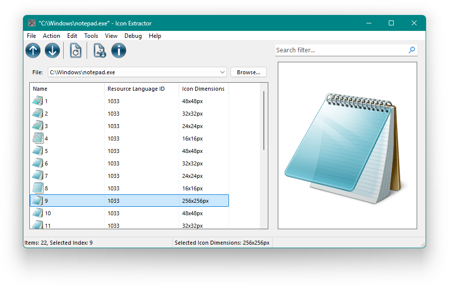

Extract all from all.
Icon Extractor is an utility for extracting icons from 32-bit and 64-bit Windows® executable PE files.There is a list of main features that allows you to work with icons more better!
Major features
1
Our app supports Windows Vista even!
2
Our app has a very small size, so you won't have to worry about enough disk
space.
3
Our app has a simple user-friendly interface, but if you don't like it for
some reason, there
is a console mode for you.
Download Version 2.0
Screenshots

Main window preview
Change Log
Version 2.0
- New improved design.
- Segoe UI as default font for better readibility & experience.
- Drag & Drop support
- Windows on ARM64 support.
- Improved user-accessibility and new experiences.
- Even more customizations.
- Optimizated and refactored code.
- OTA (Over The Air) updates.
- Favourites & Recent Files: go to your last files easily and quickly.
- Extract icons to all sizes and from more file kinds, for example, from iOS & iPadOS packages
- Extracting icons from process modules.
- Icons copying and searching.
- Embedded hash comparer: MD5, SHA1, SHA256, SHA384 and SHA512 algorithms are supports.
- Easter eggs
Version 1.2
- Fixed old bugs.
- Now you can open the file from Explorer
Version 1.1
- Fixed a bug that made it impossible to put a custom icon on the disk
- Removed the ability to install a custom icon as a utility icon
- Now you can also save icons in PNG format
Version 1.0
- The first release.